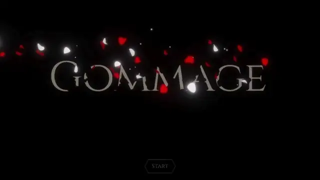
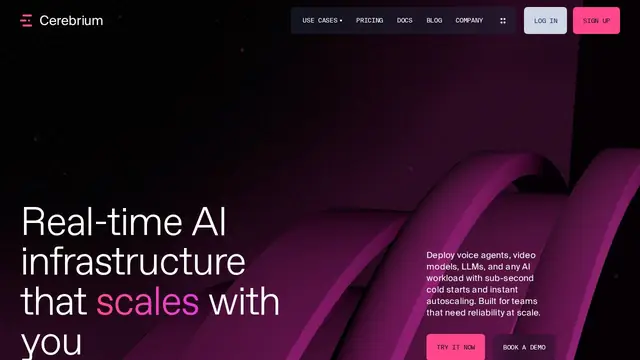
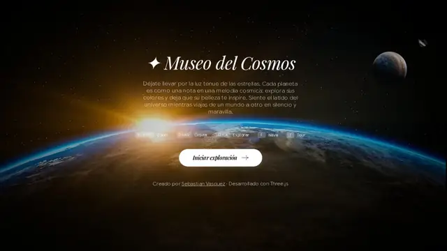
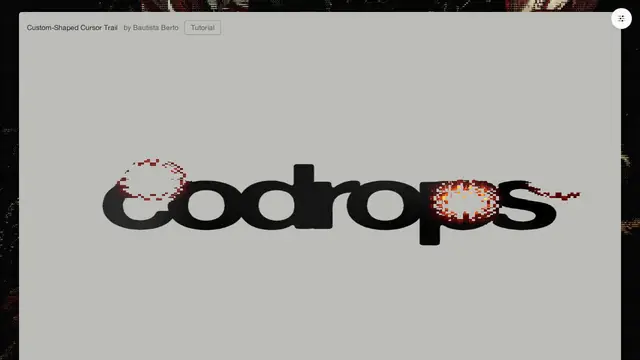
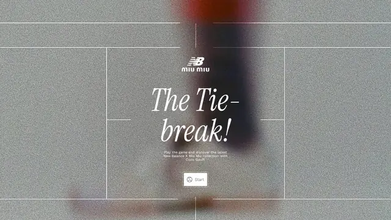
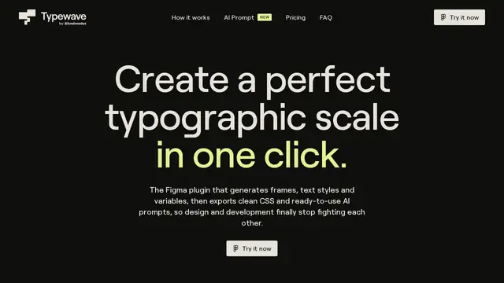

WebGPU Gommage
Clair Obscur 式消解：MSDF 字被 TSL 噪声咬碎，尘埃与花瓣粒子同步爆发。

打开网站 ↗它是什么：一行字像被风化一样碎掉、化成尘埃和花瓣飘走，灵感来自游戏《光与影：33号远征队》。
好在哪：“消散”这个瞬间做得很有仪式感：字不是淡出，而是从边缘一点点被“啃”掉，同时粒子喷出来。
怎么做到的：
- 用噪声图决定每个笔画先碎哪里，数值一过阈值那一块就消失。
- 碎掉的位置同步发射成百上千的尘埃和花瓣（同一个模型批量复制，所以不卡）。
- 只给发光的部分加泛光，画面亮而不糊。
完整技术拆解
今日拆解 · WebGPU Gommage
- Live: https://tympanus.net/Tutorials/WebGPUGommage/
- Article: https://tympanus.net/codrops/2026/01/28/webgpu-gommage-effect-dissolving-msdf-text-into-dust-and-petals-with-three-js-tsl/
- Author: Thibault Introvigne（Codrops / README）
- Source: https://github.com/WallabyMonochrome/WebGPU-clair-obscur-gommage-codrops
- Bundle:
/assets/index-EDTSsNMI.js（约 1.99 MB）+/assets/index-DLrsDo2-.css - 证据目录：本文件夹（
index.html、JS/CSS）
为何选它
8 条里它把《Clair Obscur: Expedition 33》里的「Gommage」消解瞬间搬到浏览器：MSDF 文字被噪声驱动的 TSL 着色器咬碎，同步喷出尘埃与旋转花瓣粒子，再用 MRT 选择性 bloom 收尾。WebGPU + TSL + InstancedMesh 一条管线讲完，比漂亮落地页更值得拆。
实际在源码里找到的技术栈
const em="181" / window.__THREE__=em；REVISION:em；WebGPURenderer 出现多次；await this.#threejs.init()Fn( ×56；nodeMaterial 相关 ×71；文章与 demo 标题写明 *Three.js & TSL*InstancedMesh ×28；文章步骤：dust + petal 均用 InstancedMeshMSDFText ×6；依赖 three-msdf-text-utils（package.json 写 ^1.2.1；bundle 内未找到字面量 1.2.1 → 精确补丁版以仓库为准）vo.version="3.14.2"；gsapVersions pushpackage.json：vite ^7.3.1；资源 hash 文件名。生产 bundle 无 vite 字符串package.json：^4.0.5；生产 bundle 未找到 tweakpane → 推测仅本地调试用package.json 还写明：three: ^0.181.0，与 window.__THREE__="181" 一致。
核心效果怎么工作（源码 + 标明推测）
1. WebGPU 场景启动（确认）
文章摘录：new THREE.WebGPURenderer({ antialias: true }); await this.#threejs.init();，tone mapping 用 ACESFilmicToneMapping。
2. MSDF 文字溶解（确认 + 推测）
用 three-msdf-text-utils 生成 MSDF mesh；片断/TSL 里用 noise（bundle 中 noise ×65）驱动 dissolve 阈值。推测：阈值之上的 texel 透明度归零，同时把同一噪声场喂给粒子发射，保证文字与粒子「同一刀」切开。
3. 尘埃 + 花瓣 InstancedMesh（确认）
文章目录步骤：
- Create a noise-driven dissolve effect
- Spawn and animate dust particles with InstancedMesh
- Spawn petal particles with bend + spin
- Add selective bloom with MRT nodes
花瓣用 GLB 模型（文章提到 public/models/petal.glb）。
4. 选择性 Bloom / MRT（确认）
文章写明 *selective bloom using MRT*；bundle 内 mrt ×20、bloom ×5。
5. 伪代码（忠实于教程结构）
boot:
renderer = new WebGPURenderer({ antialias: true })
await renderer.init()
renderer.toneMapping = ACESFilmicToneMapping
text = MSDFText(fontAtlas, "GOMMAGE…") # three-msdf-text-utils
dust = new InstancedMesh(dustGeo, dustNodeMat, N)
petals = new InstancedMesh(petalGeo, petalNodeMat, M) # petal.glb
each frame / on trigger (GSAP 3.14.2 timeline):
progress = gsapProgress # 0→1
textMat.dissolve = progress # TSL Fn + noise
emit dust/petals where noise crossed
petal instances: bend + spin
post = mrt bloom (selective)
renderer.render(scene, camera)如果我来重做（步骤清单）
- Vite +
three@0.181.0，主路径只用WebGPURenderer+ TSL（无适配器时给降级提示）。 - 用 msdf-bmfont 生成字体图集；
three-msdf-text-utils出字。 - 写 TSL
Fn：Perlin/噪声采样 → dissolve mask。 - 两个 InstancedMesh：dust（小四边形）+ petal（GLB）；用同一 progress 驱动发射与自旋。
- MRT 选择性 bloom，只让亮粒子/边缘进光晕。
- GSAP timeline 串起「静置 → 消解 → 粒子爆发 → 收束」。
一句话
WebGPU Gommage 用 Three r181 + TSL 把 MSDF 字咬碎成尘埃与花瓣，是今天技术浓度最高的一刀。





设计雷达 · 每天 8 个值得看的网站、App UI 和网页小游戏